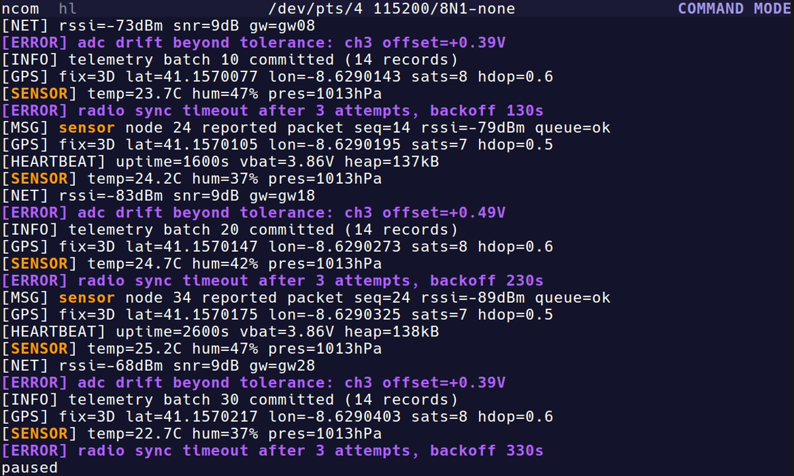
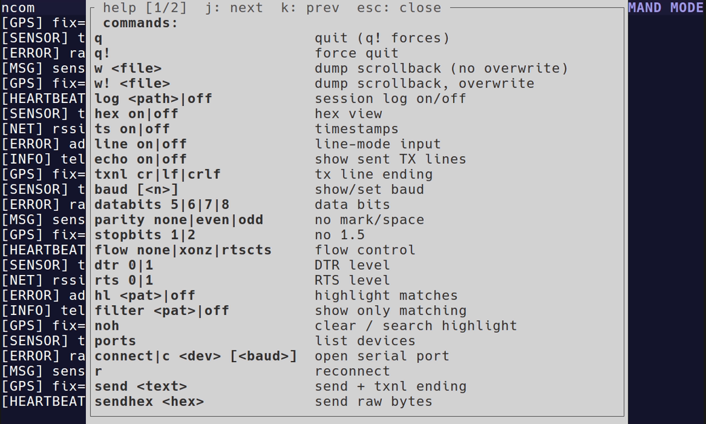
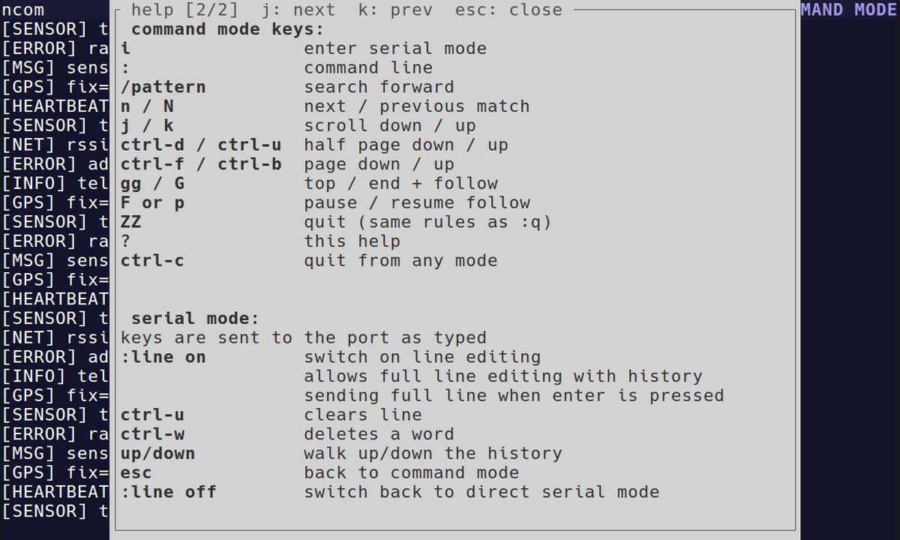

A modal, vi-like serial terminal TUI written in Rust.
ncom connects to serial devices with a 10,000-line scrollback, search,
and an ex-style : command line for connecting and live
reconfiguration. It needs no extra system libraries and installs as a
single static binary.
Features
- Modal, vi-like navigation (COMMAND / SERIAL / CMD modes).
- 10,000-line scrollback with case-insensitive search and
n/N. :filter <pattern>— view only matching lines, nothing deleted.:hl <pattern>— whole-line highlight of matching traffic.:hex on— hexdump view with offset, byte and ASCII columns.:ts on— timestamps on received lines.:log <path>— session logging.- Live reconfiguration —
:baud <n>,:line on|off,:echo on|offand more, without restarting. - Local echo of transmitted bytes.
- Chunked
:sendfilethat never blocks the UI. - Themeable — every colour (backgrounds, accents, hex-view columns) configurable via a TOML theme file.
Install
Requires Rust ≥ 1.85 and cargo (Linux; edition 2024).
cargo build --release
install -Dm755 target/release/ncom ~/.local/bin/ncom
For a fully static binary with no glibc dependency, build against the
x86_64-unknown-linux-musl target:
rustup target add x86_64-unknown-linux-musl
cargo build --release --target x86_64-unknown-linux-musl
install -Dm755 target/x86_64-unknown-linux-musl/release/ncom ~/.local/bin/ncomUsage
ncom --port /dev/ttyUSB0 --baud 115200
Or start without --port and use :ports to
list devices, then :connect <dev> [<baud>].
Modes
ienters serial mode (SERIAL);Escreturns to command mode (COMMAND);:opens the ex-style command line (CMD).j/kscroll down/up;Gjumps to the newest line and resumes follow-tail./patternsearches case-insensitively;n/Nnavigate matches.- Useful commands:
:filter,:hl,:hex,:ts,:log,:baud,:line,:echo,:sendfile,:r,:q.
Screenshots
Command mode with follow-tail over a telemetry stream

Hex Mode (:hex on)

Whole Line Highlight (:hl ERROR)

Search (/sensor) can be mixed with line hightlighting and filters.

Filter (:filter GPS) only matching lines

Help (:help)

Help Page 2 (j) — keybindings
